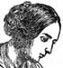
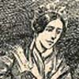
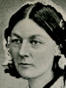

-

-

-

-

- 
- 
-

-
 From Louise Creighton, Some Famous Women.")
-

-

- 
Florence Nightingale
Milestones
- 1820
-
BirthFlorence, Italy; father is wealthy English landowner
- 1837
-
ReligionChristian Universalist; "divine calling" to nursing, age 17
- 1854
-
VocationBegins service as nurse in Turkey during Crimean War
- 1859
-
RecognitionPublished Notes on Nursing: What it is and What it is Not.
- 1860
-
VocationEstablishment in London of the Nightingale Training School
- 1883
-
RecognitionAwarded the Royal Red Cross by Queen Victoria
- 1910
-
Death
Biography as Pastiche: Florence Nightingale's Life in EpisodesRead more...
Julia Fuller
While biography is devoted to relating the lives of actual individuals (in other words, it is non-fiction), it is a narrative form that, like history, draws on conventions often used in the novel. The lived experience is condensed into a series of episodes; the descriptions are glowing, the incidents are momentous, the exceptional person is rendered in stimulating narratives. In biographies compiled during the Victorian era, female subjects become the heroines of their own stories; yet, when we look at the similarity in treatment used by many of the presenters, these personal stories overlap to create a narrative for the nineteenth-century woman of action. Since about 1980, studies of the Victorian period have rediscovered the many ways that Florence Nightingale was represented as a paragon of female vocation and service. Contemporary biographies provide a measure of this remarkably collaborative process of representation, as if making a classic legend out of a living contemporary. After all, Nightingale outlived Queen Victoria; in November, 1910, when suffragettes mobbed the Prime Minister and broke windows in the Colonial Office government buildings, Miss Nightingale, long an advisor on foreign policy, had only been dead a few months.
While biography is devoted to relating the lives of actual individuals (in other words, it is non-fiction), it is a narrative form that, like history, draws on conventions often used in the novel. The lived experience is condensed into a series of episodes; the descriptions are glowing, the incidents are momentous, the exceptional person is rendered in stimulating narratives. In biographies compiled during the Victorian era, female subjects become the heroines of their own stories; yet, when we look at the similarity in treatment used by many of the presenters, these personal stories overlap to create a narrative for the nineteenth-century woman of action. Since about 1980, studies of the Victorian period have rediscovered the many ways that Florence Nightingale was represented as a paragon of female vocation and service. Contemporary biographies provide a measure of this remarkably collaborative process of representation, as if making a classic legend out of a living contemporary. After all, Nightingale outlived Queen Victoria; in November, 1910, when suffragettes mobbed the Prime Minister and broke windows in the Colonial Office government buildings, Miss Nightingale, long an advisor on foreign policy, had only been dead a few months.
Nightingale, a heroine of nursing during the Crimean War and a hospital reformer, was an extremely popular subject of prosopographies written prior to 1930, outnumbered in appearances only by Joan of Arc and philanthropist Elizabeth Fry, according to our samples in the Pop Chart. Comparing presentations of Nightingale’s life in different works reveals nineteenth-century biography as a form of pastiche. Various writers compose her story in episodes that are lifted verbatim or nearly-verbatim from other sources. As these narratives are repeated consistently throughout biographies, they become naturalized in the popular imagination and together contribute to figuring her as the “Lady with the Lamp”—an archetypal image for the ministering woman which presenters also used in depictions of Elizabeth Fry’s life. In these prosopographies, we can rediscover one of the ways that Nightingale's persona was transmitted as an example for later generations, not least for skeptical interpreters of the Victorian age from Lytton Strachey to Mary Poovey.
Here, excerpts from two biographies—Hamilton Wright Mabie and Kate Stephens's Heroines That Every Child Should Know and Rosa Carey's Twelve Notable Good Women—are condensed into episodes and placed side-by-side for comparative analysis. Passages which are repeated word-for-word in each have been highlighted. By drawing the biographical pastiche to the surface of the presentations, we are able to discern some consistent narrative techniques of the genre. While noticing the similarities, we also become more attuned to pointed variations in the "story" of Nightingale's life, in which case, a critical evaluation is included in the introduction to the episode.
Episode 1: Talent
Nightingale's promise as a nurse revealed itself at an early age. The guidance of a sage "old friend" (a local minister who became her mentor) supplemented an innate sympathetic interest in the well-being of others and led Nightingale to her first medical achievement: healing a dog's badly wounded leg. Mabie and Stephens render the episode in great detail, creating a vivid scene of narration in contrast with Carey's cursory treatment. Nonetheless, both presenters make note of the episode to situate Nightingale within her little community, identifying a collective recognition of her early talent and a dependence thereafter upon her expertise for nursing its everyday ailments:
{kind=link}
Mabie & Stephens
There lived in one of two or three solitary cottages in the wood an old shepherd of her father's, named Roger, who had a favourite sheep-dog called Cap. Roger had neither wife nor child, and Cap lived with him and kept him company. . . . Cap was a very sensible dog; indeed people used to say he could do everything but speak. He kept the sheep in wonderfully good order. . . . One day as Florence and her old friend were out for a ride, they came to a field where they found the shepherd giving his sheep their night feed; but he was without the dog, and the sheep knew it, for they were scampering in every direction. . . . They stopped to ask what was the matter, and what had become of his dog.
"Oh," said Roger, "Cap will never be of any more use to me; I'll have to hang him, poor fellow, as soon as I go home to-night. . . , one of the mischievous school boys throwed a stone at him yesterday and broke one of his legs." And the old shepherd's eyes filled with tears, which he wiped away with his shirt-sleeve, then he drove his spade deep in the ground to hide what he felt, for he did not like to be seen crying.
There on the bare brick floor lay the dog, his hair dishevelled, and his eyes sparkling with anger at the intruders. When he looked at Florence and heard her call him "poor Cap," he began to wag his short tail; and then crept from under the table and lay down at her feet. She took hold of one of his paws, patted his old rough head, and talked to him, whilst her friend examined the injured leg. It was dreadfully swollen, and hurt very much to have it examined; but the dog knew it was meant kindly, . . . .
"It's only a bad bruise, no bones are broken," said her old friend. "Rest is all Cap needs; he will soon be well again."
"I am so glad," said Florence; "but can we do nothing for him, he seems in such pain?"
"There is one thing that would ease the pain and heal the leg all the sooner, and that is plenty of hot water to foment the part."
Florence struck a light with the tinder-box, and lighted the fire, which was already laid. She then set off to the other cottage to get something to bathe the leg with. She found an old flannel petticoat hanging up to dry, and this she carried off, and tore up into strips, which she wrung out in warm water, and laid them tenderly on Cap's swollen leg. It was not long before the poor dog felt the benefit of the application, and he looked grateful, wagging his little stump of a tail in thanks. . . On the next morning Florence was up early, and the first thing she did was to take two flannel petticoats to give to the poor woman whose skirt she had torn up to bathe Cap. Then she went to the dog, and was delighted to find the swelling of his leg much less. . . .
Two or three days afterward Florence and her friend were riding together, when they came up to Roger and his sheep. This time Cap was watching the sheep, . . . . When he heard the voice of Florence speaking to his master, who was portioning out the usual food, his tail wagged and his eyes sparkled, but he did not get up, for he was on duty. The shepherd stopped his work, and as he glanced at the dog with a merry laugh, said, "Do look at the dog, Miss; he be so pleased to hear your voice." Cap's tail went faster and faster. "I be glad," continued the old man, "I did not hang him. . . ."
But from the day the little girl nursed the leg of the shepherd's dog, it became the custom of the neighbourhood where she lived to send for her when anyone had a cut or bruise or sick animal.
Carey
Florence Nightingale was particularly fond of animals, and it is interesting to hear that her first attempt at nursing was performed on an old Scotch shepherd's dog with an injured leg. From that day, we are told, "that it became a custom when any one had a cut or bruise, or a sick animal, to send for Miss Florence."
Episode 2: Education
Although Carey does not include the narrative of Nightingale and her first "patient," the subsequent impact of the episode on her choice of vocation is treated almost verbatim in the texts. The presenters rely on the same sources to discuss Nightingale's education and both include a reference to her sober tastes in reading as a testament to her dedication. [1] The young nurse's reading habits were self-edifying and led her to Elizabeth Fry's philanthropic ideology as a model for public reform work.
The presenters' final paragraphs contain a discrepancy which is notable: Mabie and Stephens direct our attention to the object of a "great work," while Carey's addition, "when the call came it found her ready," redirects that focus to the personal capabilities of her subject. As the latter forecasts Nightingale's heroism in the service of her countrymen, she also alludes to the potential for female energy in the field of action:
Mabie & Stephens
"During her girlhood," says the lady who has written her life, "she was chief almoner to the cottages around her home, and nursed all illnesses under the advice of her mother and the vicar." Her favourite books were those that taught of helpfulness to the suffering and miserable, and it seemed as if her whole nature was turning toward her great work. While still a young girl she became interested in what Elizabeth Fry had done in English prisons, and she paid an interested visit to Mrs. Fry.
When in London she would visit hospitals and kindred institutions, and it is said that in the family travels in Egypt she nursed to health several sick Arabs. Her tastes and time, it is evident, were turned toward a humane and benevolent rather than a social life. . . She had withdrawn from gaieties to learn whatever she could of the hospitals of London, Edinburgh and Dublin, and indeed, of the civil and military hospitals of all Europe, and finally in 1851, she went into training as a nurse in a famous institution at Kaiserwerth on the Rhine. Here, when she had taken the course of instruction, she passed a distinguished examination.
But at this time a hospital and home in London for sick and aged governesses was about to fail from lack of means and lack of able direction. To this Miss Nightingale gave herself with ardour, and so renewed its strength that it still remains a witness to her energy. She gave largely to this institution. Nevertheless she was to be found, says a visitor, "organising the nurses, attending to the correspondence, prescriptions and accounts; in short, performing all the duties of a hard-working matron."
Ten years she had been serving apprenticeship for the great work of her life, and now she was thirty-four years old.
Carey
And in another passage, Mrs. Tooley tells us, "During her girlhood she was chief almoner to the cottages around her home, and nursed all illnesses under the advice of her mother and the vicar, who, in his youth, had studied medicine. Her favourite books were those that dealt with the alleviation of human suffering and misery, and it seemed as though her whole nature were impelled in that direction. She became, while still a young girl, interested in the prison work of Elizabeth Fry, and paid a memorable visit to that veteran friend of humanity in her London home."
The ordinary routine of London social life had few attractions for Florence Nightingale. We hear that she and her sister were presented, but very shortly afterwards she withdrew from all gaieties. The call, "Come up higher," had already sounded in her ears. During the next few years she gave her attention to the condition of hospitals. After a systematic inspection of those in London, Dublin, and Edinburgh, she visited civil and military hospitals all over Europe, and in 1851 went into training as a nurse in the Institution of Protestant Deaconesses, at Kaiserswerth on the Rhine. . . After a period of much needed rest at Lea Hurst, Miss Nightingale undertook the management of an institution for sick and aged governesses at 47 Harley Street, and devoted herself, with energy and ardour, to the reorganisation of this institution, which remains to-day as a monument of her work and method. A lady who visited her in Harley Street said, "She was to be found in the midst of the various duties of a hospital, for the Home was largely a Sanatorium, organising the nurses, attending to the correspondence, prescriptions and accounts; in short, performing all the duties of a hard-working matron, as well as largely financing the institution."
For ten years she had served her apprenticeship in preparation for the work of her life; when the call came it found her ready. She was then about thirty-four.
Episode 3: Vocation
The Crimean War was Nightingale's most famous field of action and her work as a professional nurse during this period made her a public sensation. As the war raged on through the winter of 1854-1855, fighting on the battlefield as well as inadequate medical support threatened heavy casualties among England's soldiers. Mabie and Stephens as well as Carey repeat the same anecdote of a prophetic coincidence as evidence of Nightingale's readiness to commit herself to service even before "the call came" in a letter from the head of the War Department. Nightingale led a company of nurses to Turkey and Mabie and Stephens emphasize that a vocation for England's ministering women at the front-lines of a war effort was unprecedented:
Mabie & Stephens
In 1854 a war broke out between England and Russia. It is known as the Crimean War. England sent her soldiers to the Black Sea in many thousands. These soldiers were sadly clad and fed. Bad management seems to have prevailed, and the service for carrying supplies was inadequate. Warm clothing, blankets, tents and other protection failed to reach the troops.
During that winter of 1854, many were frozen in their tents. Of nearly forty-five thousand, over eighteen thousand were reported in the hospitals. The English people at last saw their disaster, and certain women volunteered services of helpfulness. The head of the War Department of the Government who knew of Miss Nightingale's interest in nursing, asked her to superintend and organise a staff of nurses. By a strange coincidence Florence Nightingale had written and offered her aid to the sick and wounded soldiers, and her letter passed the letter from the Government.
It was an undertaking wholly new to English habits—a band of devoted women going to soften the horrors of war and save lives the war had endeavoured to end. . . They sailed across the Mediterranean and in November, 1854, reached Scutari, a town in Turkey in Asia, opposite Constantinople.
Carey
"When war broke out between England and Russia, in March 1854, the hospital arrangements of the British army were in a very imperfect state. The army while at Varna suffered from a deficient number of surgeons, though many courageous volunteers offered themselves. A hospital was established at Scutari, a port of the Turkish capital, and was intended for the wounded soldiers. . . But it was at Scutari that the great evils were prevalent, the great horrors enacted, and the indelible shame upon our country inflicted." There is no sadder chapter of human history than that of the Crimean War, and yet the causes of all these miseries have never been adequately traced. The grossest mismanagement seemed to have prevailed; the transport service was inadequate; the stores of warm clothing, great-coats, blankets and huts, which had been ordered for the protection of the army in winter, failed to reach them for weeks after the English newspapers told of the comforts provided for the troops.
Such was the state of things at the close of 1854, and to some extent during the remainder of the winter. But help was at hand. The head of the War Department was Mr. Sidney Herbert, afterwards Lord Herbert of Lea. He was an enlightened and far-sighted man; he knew of Miss Nightingale's interest in nursing, and he wrote to her. Some ladies had already volunteered their services, and a staff of female nurses was being formed, and he asked her to undertake the superintendence of the lady nurses and to organise the operations. By a strange coincidence, the very day Mr. Sidney Herbert wrote his memorable letter, Florence Nightingale had actually written to him offering her services to the sick and wounded in the Hospital at Scutari. The letters had crossed. Great must have been her surprise when she read his, asking her to take command of the little nursing band, and leave for the East in eight days. Short was the notice, nevertheless Miss Nightingale had everything ready; and on October 21st, 1854, and accompanied by her friends, Mr. and Mrs. Bracebridge, of Atherstane Hall, Yorkshire, and a band of thirty-eight nurses, she left England on her great mission.
Episode 4.1: Ordeal
When Nightingale's band of nurses reached Scutari in Turkey, they found a 'battlefield' of their own in the hospital there, which claimed victims through deplorable sanitation conditions. In the excerpts of this episode, the presenters have a similar tone, using an imperative inflection to relate the circumstances the nurses encountered in the context of an ordeal. The narrative technique also reflects the urgency of the transformation which Nightingale orchestrates—the legend-making at work in nineteenth-century biography is exemplified in Carey's use of hyperbolic language and allusion to Herculean myth.
The systems of management Nightingale implemented in Scutari's hospital are akin to Victorian housekeeping practices: her nurses cleaned, cooked and regulated the patients' dietary needs, organized and distributed supplies; as well, the passage from Mabie and Stephens contains a reference to the gendered labor of sewing and washing. Nightingale engaged the methods of household management on a level of national importance as she instituted reforms which also advanced England's war effort. Quoted verbatim in each biography is a note on the opposition the "gentle missionaries" met with from male officials who considered them to be "anarchists." However, the presenters include this compelling detail in passing—neither pursues the underlying implications of Nightingale's challenge to the military establishment and masculine authority. Her campaign for professionalized nursing during the Crimean War involved an obvious conflation of spheres and revealed a porousness in the supposed barrier to female agency in a public field of action:
{kind=link}
Mabie & Stephens
Four thousand sick and wounded soldiers lay in the hospitals awaiting their ministrations. And still others from a great battle were coming in. These hospitals were so filled that even in the corridors were two rows of mattresses and so close together that two persons could barely walk between the rows. The beds reeked with infection. There was no thought, seemingly, of sanitation. Rather than curers the hospitals were breeders of pestilence.
"The whole of yesterday one could only forget one's own existence," wrote one of the nurses, "for it was spent first in sewing the men's mattresses, and then in washing them, and assisting the surgeons, when we could, in dressing their ghastly wounds after their five days' confinement on board ship, during which space hundreds of wounds had not been dressed. Hundreds of men with fever, dysentery and cholera (the wounded were the smaller portion) filled the wards in succession from the overcrowded transports." Such were the conditions this band of women found.
The head of the band, Miss Nightingale, began her work of organization. She laboured with tireless energy and indomitable will. But not without opposition. The military and medical officials, says one who was there, "were in the uttermost confusion among themselves, and they generally regarded these gentle missionaries as a new element of anarchy."
Carey
They reached Scutari on November 5th, in time to receive the wounded from the Battle of Inkermann. On their arrival they set at once to the performance of their arduous duties. Indescribably horrible was the state of the hospital when Miss Nightingale made her first inspection. Sanitary arrangements were nil. The beds were reeking with infection. Outside the hospital was a hotbed of pestilence. Hercules' labour in clearing the Augean stables could only be compared to the awful task that lay before those devoted women. A tower at one of the corners of the Barrack Hospital gave them accommodation.
From the first the indomitable will of "the Lady-in-chief," as she was called, made itself felt in every department, which gradually broke down all obstacles raised by the jealousy or bad tempers of the officials. As Nolan tells us, "Doctors, purveyors, store-keepers, orderlies, inspectors, dispensers, and interpreters were in the uttermost confusion amongst themselves, and they generally regarded these gentle missionaries as a new element of anarchy." [2]
As Kinglake says most beautifully: "It was not only under her reign, but by force of her actual sway, that order sprang out of chaos; that the hell she had found when she came knew at last the blessing of cleanliness; that the administration of our Levantine hospitals began to seem almost perfect. . . . She brought to her self-imposed task that forethought, that agile brain-power, that organising and governing faculty of which our country had need." [3]
A further staff of fifty trained female nurses had been sent from England to help Miss Nightingale and assistants. There was plenty of work for all. One can only imagine what privations and discomforts those devoted women had to undergo during those months of wearing fatigue and endurance, and it would be difficult to give any idea of their round of daily and nightly duties. They had to do everything for themselves as well as for the patients.
Episode 4.2: Ordeal
A rhetorical convention of prosopography apparent in sketches of Nightingale's life is the topos scene of a ministering angel nursing a dying man. Mabie and Stephens as well as Carey duplicate a description of Nightingale performing her duty at the side of a wounded soldier lying on the surgeon's table, about to undergo the horrors of an amputation. Implied in the image is the mutual ordeal she prepares to face, "patiently standing by him and, with lips closely set and hands folded, decreeing herself to go through the pain of witnessing pain." The narrative episode becomes a testament to Nightingale's mettle. Taking a meta-critical perspective on the generic conventions of collective biographies of women, we can see that the topos repeated in the following passages suggests that the ministering angel possesses a fortitude which is peculiar to females. At the same time, this portrayal of a woman reflects (so as to reinforce) a man's strength to endure painful trials:
Mabie & Stephens
Every fresh detachment of the wounded meant fresh work for the band of devoted women. Miss Nightingale was always among the busiest and she was known to stand for twenty hours assisting at operations, directing nurses, herself ministering to cholera and fever patients and distributing stores.
Carey
There are some interesting passages in Nolan's "History" which give us an idea of the work of this wonderful woman, collected from the letters of Mr. Osborne, Mr. Bracebridge, Mr. Macdonald, and her faithful and zealous young helper,"Mr. Stafford, who sat by the bedside of the patients, reading for them the letters of their friends, and acting as letter-writer-general on their behalf." "She, Miss Nightingale, had to tend, or see tended, thousands of sick men." And again: "I was with her when various surgical operations were performed, and she was more than equal to the trial. She has an utter disregard to contagion. I have known her spend hours over men dying of cholera or fever."
When Mr. Macdonald was about to return to England he wrote concerning this queen of nurses: "Wherever there is disease in its most dangerous form, and the hand of the spoiler distressingly nigh, there is this incomparable woman sure to be seen. Her benignant presence is an influence for good comfort even amid the struggles of expiring nature."
When fresh detachments of the wounded were brought in, she had been known to stand for twenty hours, distributing stores, directing nurses, assisting at operations, and ministering to cholera and fever patients.
No worker in this world's history has been free from detractions, but one can hardly credit that there were tongues to find fault with this brave woman; but no such censure was passed by those amongst whom she worked. Kinglake tells us: "The magic of her power over men used often to be felt in the room—the dreaded, the blood-stained room—where 'operations' took place. There, perhaps, the maimed soldier, if not yet resigned to his fate, might at first be craving death rather than meet the knife of the surgeon; but when such a one looked and saw that the honoured Lady-in-chief was patiently standing by him and, with lips closely set and hands folded, decreeing herself to go through the pain of witnessing pain, he used to fall into the mood for obeying her silent command, and, finding strange support in her presence, bring himself to submit and endure."
Episode 5: "The Lady with the Lamp"
Another topos element that presenters repeat to demonstrate Nightingale's heroic dedication is a description of her making rounds among the wounded soldiers under her care at Scutari. As a practice, she walked the hospital corridors late into the night, lighting the way with a lamp that also signaled her reassuring presence to the many suffering patients. Mabie and Stephens as well as Carey rely upon the same source material for an account of Nightingale's nocturnal habit, reproducing the episode as a topos event which represents her mission of service. This topos (scene of interaction) of mission, duplicated across several sketches of her life's work, also entails a trope (figure of speech or image): the mission brings light into darkness, as a metaphor for bringing hope or relief to the suffering as well as civilization or order to settings of violence or disorder. Curiously, in Nightingale's iconography, she herself brings light but also shadow, an intangible image that the men each may kiss. The socially-constructed rhetoric of female vocation as the bearing of a beacon mythologized Victorian women's public service, serving at the same time to reinforce an individual woman's status above a certain class of men (often conscripted men) as well as her difference from other women. Often the beacon or light-into-darkness imagery is associated with the trope that we call "alone," the idea that the heroine braves the darkness in solitude or without protection, whether or not she was accompanied by assistants or male peers or authorities who ensure her safety or success. We find the light-into-darkness trope in multiple biographies about one subject also being applied to link several subjects within one collective biography. In fact, this trope appears across many genres in the nineteenth-century, contributing to the fullness of a narrative pastiche which transforms living women into cultural lengend. Henry Wadsworth Longfellow reiterates the rhetoric in verse form to present Nightingale as a luminous subject—excerpts of the poem he wrote for her appear in Mabie and Stephens as well as Carey:
Lo! in that house of misery A lady with a lamp I see Pass through the glimmering gloom And flit from room to room. A Lady with a Lamp shall stand, In the great history of the land, A noble type of good, Heroic womanhood. [4]{kind=link}
Like the presenters of prosopography, Longfellow's use of the light-into-darkness trope contributes to defining the ideal form of "womanhood," which was not the listless and marginalized figure later critics have associated with Victorian femininity. Longfellow depicts Nightingale as both ethereal and steadfast; the comforting beacon in a desolate house as well as a pillar of social good; a ministering angel diffusing her energy in service to others even as she reifies her legendary self.
In response to popular interest in the "Lady with the Lamp," the Crimean war correspondent for the London Times recorded an account of Nightingale's nursing habits, which Mabie and Stephens as well as Carey reproduce: "When all the medical officers have retired for the night and silence and darkness has settled down on the miles of prostrate sick, she may be observed alone with a little lamp in her hand making her solitary rounds." In a pastiche between journalism and biography, each presenter appropriates the eye-witness news report for his own narrative form.
By duplicating conventional rhetorical tropes, presenters of collective biography shaped a subject's life story in the popular imagination. In the passages below, the enduring figure of Nightingale as "Lady with the Lamp" adds to her legend and demonstrates how her work to reform nursing is aligned through metaphor with Elizabeth Fry's entrance into the notorious women's prison at Newgate, as well as Ann Judson's (American pioneer for female missionaries) journey to convert "heathens" in Burma, among others:
Mabie & Stephens
Carey
"She is a 'ministering angel' without any exaggeration in these hospitals; and as her slender form glides quietly along each corridor every poor fellow's face softens with gratitude at the sight of her. When all the medical officers have retired for the night, and silence and darkness has settled down on those miles of prostrate sick, she may be observed alone with a little lamp in her hand making her solitary rounds."
"To see her pass was happiness," one poor fellow said. "As she passed down the beds she would nod to one and smile at many more; but she could not do it to all, you know. We lay there by hundreds; but we could kiss her shadow as it fell, and lay our heads upon the pillow again, content." What words could be more touching than those!
Well may the honoured name of Florence Nightingale be enshrined in every English heart. In our generation there is no more noble example than that of our dear Lady of the Lamp, "the Queen of Nurses, and the Soldiers' Friend."
Episode 6: Appearance
Mabie and Stephens as well as Carey provide nearly identical presentations of the topos of Nightingale's physical persona and other's response to it; the passages repeat some material verbatim. The excerpts suggest that her feminine, upper-class appearance belied a mental sharpness and capacity for administrative leadership which, while generally associated with masculinity in the Victorian era, was claimed for women and celebrated in female collective biographies written during the nineteenth-century. Nightingale's aspect of fragility cancelled out the stereotype of the muscular, vulgar nurse that had previously prevailed. Her perceived youth, elegance, and refinement contributed to her legend as a heroic figure, making her disregard of contagion and dedication to long hours at the bedsides of patients seem physically impossible. These presenters link her surprising endurance to a definition of true womanhood and suggest that femininity is not the absence of fortitude but the channeling of it both to provide comfort and to encourage wounded soldiers who no longer have physical strength of their own.
In 1855, while inspecting war hospitals, Nightingale contracted Crimean fever and was near death for twelve days. She recovered, but the illness, along with over-exertion, compromised her health. On returning to England in 1856 after the war's end, she spent much of the rest of her life as an invalid and became an adept woman of letters, statistician, and government advisor. Although she physically was unable to continue her nursing work, she still had a public presence in the medical field, writing reports, dictating official correspondence and advising on health care reforms from her bed. The legend of the ministering angel of the Crimean War, based on her image as a beautiful, delicate lady, gave her the stature to influence the policies of both domestic and foreign governments:
Mabie & Stephens
Carey
Her benignant presence is an influence for good comfort even amid the struggles of expiring nature.
Episode 7: Recognition
When the Crimean War ended, Florence Nightingale was already a living legend in the public's imagination and a grateful nation was eager to pay tribute to its heroine. Like many of the other eminent women celebrated in nineteenth-century collective biographies, she received recognition for her service from Queen Victoria. Interest in her exploits during the war had inspired even the Queen to ply her needle for the nursing effort, and as Carey’s presentation indicates, Nightingale understood that the story of her "great and remarkable experience in the East" could serve as a tool to galvanize her continued mission of reform. Mabie and Stephens as well as Carey include testimony of her modesty about public recognition, a characteristic which goes hand-in-hand with Victorian ideals for feminine behavior. Yet Nightingale was certainly not reserved about the insight she gained from her experience with England’s Army Medical Service and the legends from Scutari gave her a captive audience for her mission to improve medical care on the home front. She capitalized upon popular recognition to ensure political recognition and maintain support for her campaign. As one of Nightingale’s biographers recently noted, "no Victorian, except perhaps the queen, made more effective use of attrition by letter! Not for her were the waiting in the corridors of power and the attending of committees; people came to her and by appointment" (ODNB):
Mabie & Stephens
At last the fighting was brought to an end. For a year and a half had the noble and humane work of nursing gone on and shown the world how much greater is the saving of lives than the destruction of lives by the murder of war. The gratitude the English people felt for what the nurses had done they expressed by a gift of fifty thousand pounds to Miss Nightingale after her return to England. They had planned also a public welcome of their heroine, but with the modesty and calm judgment that always characterised her, she slipped quietly into England by the carriage of a French steamer and so to her country home. Queen Victoria, who with her husband the Prince Consort, had most earnestly admired Miss Nightingale's course, and had sought direct knowledge of her work during her stay in the East, entertained her at Balmoral and presented her with a valuable jewel. The sum presented her by the nation was, at her request, given to the foundation of a training home for nurses in connection with St. Thomas's Hospital. It is called the "Nightingale Home."
Carey
"All England," as Mrs. Tooley tells us in her article, "from the Queen to the humblest peasant, were making warm garments and preparing lint and bandages for the soldiers. The Patriotic Fund for the relief of the widows and orphans rose by leaps and bounds, until within a year it amounted to one million pounds."
The Queen had already sent Miss Nightingale an auto-graph letter, with a jewelled Cross of St. George, inscribed in letters of gold with the words, "Blessed are the Merciful," and on her return she was summoned to Balmoral. On September 21st she was introduced to the Queen and the Prince Consort by Sir James Clark, with whom she was then staying at Birkhall. "She put before us," is the brief entry in the Prince's diary, "all the defects of our present military hospital system, and the reforms that are needed. We are much pleased with her. She is extremely modest."
About a fortnight later, we are told, Miss Nightingale became the Queen's guest, "the time of her visit being so fixed as to give Lord Panmure, who was then at Balmoral, an opportunity of learning from her own lips the story of what she had seen and the conclusions she had drawn from her great and remarkable experience in the East."
Florence Nightingale had evaded a public ovation on her return from Scutari, but the magnificent testimonial of fifty thousand pounds was presented by the nation and army, in recognition of her splendid services; but by her request this sum was devoted to the formation of a Training Home for Nurses in connection with St. Thomas's Hospital. It is called "The Nightingale Home," and has a reputation worthy of its founder.
Nightingale was a pioneer for female participation in the public professions and argued for the social benefit of giving educated women paid work as nurses and midwives. She challenged male medical authorities and governmental policy makers, pushing for reform in England’s health system and sanitation in India. As well, she insisted upon society’s responsibility to care for the poor, and in her hospital reports demonstrated that mortality rates could be significantly reduced through the practices of the newly emerging sanitary sciences. The “Nightingale Home” became the first training school for nurses and aimed to standardize practices of caring for patients in hospitals. Along with her colleague and Victorian contemporary Charles Dickens and in league with Angela Burdett-Coutts (another subject in collective biographies of women in the period), Nightingale used her popularity to spear-head public service projects in support of London’s poor and infirm. Her life spanned the Victorian era and her career had a lasting influence on the progress of medical services in the military as well as in industrialized urban areas.
In his widely-read collective biography, Eminent Victorians, Lytton Strachey asserted that the real Florence Nightingale was "more interesting than the legendary one though less agreeable" (qtd. in ODNB). At the same time however, the legendary "Lady with the Lamp"—or as Mabie and Stephens coin her, the "Angel of the Crimea"—provided the real Florence Nightingale with a position of public prominence unusual for women in most eras of history, what she referred to as having an "office." The popular narratives of her heroism that form the pastiche of biographical tributes from the nineteenth- and early twentieth-century assisted the determined nurse as she undertook the colossal task of reforming England’s inadequate hospital system. Florence Nightingale became a trusted advisor for the health of the nation just as the "Lady with the Lamp" was the trusted bearer of hope through the darkened halls of misery in Scutari.
Notes
Images (listed in order of appearance)
Condensed Works
Links
-
"Florence Nightingale—Nursing Pioneer." Medical and Nursing Training. 2002-2009.
Accessed through the Medical and Nursing Training website, this page is a bibliographic hub that brings together links to online profiles about Florence Nightingale, including an enlightening portrait of her influence in the field of mathematics. This extensive collection of sources includes articles from the BBC, Spartacus Educational and Heritage History as well as provides access to Nightingale's personal correspondence, a timeline of milestones and profiles of figures associated with her life and work. -
Edward T. Cook, The Life of Florence Nightingale. Vol. I & II. London: MacMillian & Co., 1914.
Edward T. Cook's meticulous biography about Florence Nightingale, which follows chronologically the events of her life and work. Text published in two volumes, Vol. I containing the years 1820 to 1861 and Vol. II the years 1862 to 1910. Volume one provides the author's preface. Links to Vol. I and II accessed through Google Books. Full-text editions include several illustrations. -
Lynn MacDonald, ed., The Collected Works of Florence Nightingale: An Introduction to Her Life and Family. Waterloo, Ont.: Wilfrid Laurier University Press, 2001.
Edited by Lynn McDonald, this extensive collection of Florence Nightingale's personal correspondence provides insight into her family life and domestic activities. McDonald also complies a detailed biographical outline of Nightingale's life and discusses her viewpoint on various subjects organized by themes that range from nursing, religion and mathematics to romantic attachments and personal interests. This digitized preview of the text is accessed through Google Books and includes useful appendixes with Nightingale's family tree as well as her last will. -
Lytton Strachey, Eminent Victorians. New York: G.P. Putnam’s Sons, 1918; Bartleby.com, 2000.
A collective biography of notable Victorian figures by Lytton Strachey that contains a five part section on Florence Nightingale. This full-text edition from Bartleby includes Strachey's preface. -
Marjie Bloy, "Florence Nightingale: 1820-1910." The Victorian Web.
Biographical entry on Florence Nightingale from the database The Victorian Web written by Marjie Bloy, Senior Research Fellow at the National University of Singapore. The webpage entry includes keyword links providing more information on important people and events associated with Florence Nightingale's life, as well as a list of sources for further reading. -
Monica E. Baly and H. C. G. Matthew, "Nightingale, Florence (1820–1910)." Oxford Dictionary of National Biography. Ed. H. C. G. Matthew and Brian Harrison. Oxford: OUP, 2004. Online ed. Ed. Lawrence Goldman. May 2009.
Oxford Dictionary of National Biography entry on Florence Nightingale written by Monica E. Baly and H. C. G. Matthew. Includes an extensive biography as well as a list of other sources and archive materials related to Florence Nightingale. Provides a link to the National Archive and images contained in the National Portrait Gallery. -
Sarah A. Tooley, The Life of Florence Nightingale. New York: Macmillan, 1905.
Sarah Tooley's comprehensive biography about Florence Nightingale's domestic life as well as her professional work in the field of nursing. Full-text edition includes the author's preface and twentyfour detailed illustrations. Linked through Google Books.